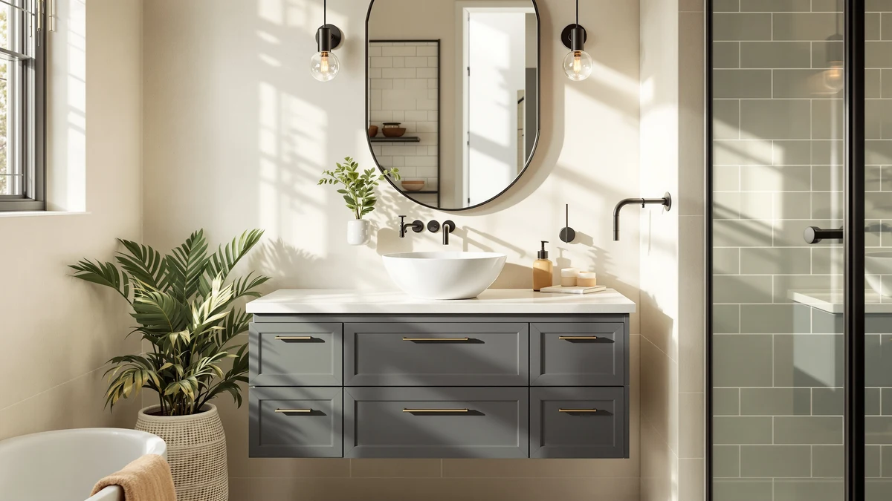

Things to Know Before You Buy
- "Solid wood" labels often mean a wood frame with plywood or MDF panels. Read the spec sheet for the box material, not the headline.
- MDF handles humidity, not standing water. Sealed MDF survives shower steam for years, but a slow leak under the sink destroys it.
- Expect to pay 40 to 80 percent more for solid wood at the same width and configuration.
- Painted finishes favor MDF, stained finishes require wood. MDF has no grain to telegraph through paint, and stain needs real grain to work with.
- Hardware matters as much as material. Cheap hinges and drawer glides fail before either cabinet box does.
You will run into the wood vs MDF vanity question early in any bathroom remodel, and your answer matters more than the faucet or the paint color. A vanity cabinet lives in the wettest room of the house, and the material inside the box determines whether it shrugs off fifteen years of steam and splashes or swells at the seams. We compared solid wood and MDF vanities across the $240 to $1,130 range to sort out where each material earns its cost.
The short version: solid wood costs more and asks for more care, but you can sand and refinish it after a decade of dings. MDF costs less and holds paint better, and it stays flat year after year, but a plumbing leak can end it in a weekend. Below we break down build quality, price, and daily use, then point you to specific vanities we recommend on each side.
Quick Answer
Choose solid wood if you plan to keep the vanity past the ten-year mark, or if you want a stained finish you might refinish someday. Choose MDF if you want a painted vanity at a lower price and your bathroom has decent ventilation. For most renovators on a budget, a well-sealed MDF vanity is the smarter buy; for a forever home, wood justifies the premium.
What is Wood?
A solid wood vanity uses lumber, usually oak, maple, birch, or rubberwood, for the cabinet frame, doors, and drawer fronts. Manufacturers rarely build the entire box from solid boards because wide panels warp, so most pair a solid frame with plywood side panels. That construction still counts as wood and performs like it.
Wood earns its reputation on repairability. You can sand out a scratch or re-stain a faded door, and when a hinge screw strips, you drive it into fresh material an inch over. The cabinet keeps going. Hardwoods also hold screws better than engineered board, so hinges and drawer glides stay tight through years of daily use.
The trade-offs are movement and cost. Wood expands and contracts with humidity swings, so door gaps shift with the seasons and a poorly finished cabinet can crack along its glue joints. Quality varies by species too, since rubberwood at the budget end behaves differently from oak at the top. In this lineup, the ARS Concepts 54-inch and the Merax 30-inch wood cabinet ($349, as of July 2026) are the wood side of the wood vs MDF vanity matchup.
What is Mdf Vanity?
MDF stands for medium-density fiberboard: wood fibers broken down, mixed with resin, and pressed into dense, uniform sheets. An MDF vanity typically uses those sheets for the cabinet box, doors, and panels, wrapped in paint, laminate, or a thermofoil skin. The material runs denser and heavier than most plywood of the same thickness.
Uniformity is the material's core strength. MDF has no grain or knots, and no internal tension pulling it out of shape, so it stays flat and machines cleanly into shaker profiles. Paint goes on without grain lines showing through. Factories favor it because two sheets behave identically, which keeps prices down and finish quality consistent.
Water is the weakness. Raw MDF wicks moisture and swells permanently, and once an edge blows out, no repair brings it back. Modern bathroom-grade MDF ships sealed on all faces and survives normal shower steam, but a P-trap that drips onto the cabinet floor for a month will ruin an MDF vanity where plywood would survive. The Favfurish 36-inch ($287.99, as of July 2026) shows what this construction delivers at a value price.
Head-to-Head: Build Quality & Durability
On raw durability, wood wins the wood vs MDF vanity contest, but by less than most buyers assume. A sealed MDF box in a ventilated bathroom lasts 10 to 15 years without drama. A solid wood or wood-and-plywood box lasts 20 or more and can be refinished along the way, which MDF cannot.
Screw-holding is where the gap shows day to day. Hinges anchored in hardwood or plywood stay tight, while hinges in MDF loosen after a few thousand cycles and, once stripped, give you nothing solid to re-drive into. If your vanity will see kids yanking doors, that difference matters more than the panel material itself.
Impact resistance splits the other way. MDF dents rather than cracks and has no grain to split along, so a dropped hair dryer leaves a dimple, not a fracture. Wood can crack along the grain under a sharp hit. Both materials depend on their finish, and an unsealed edge on either one is where moisture gets in.
Head-to-Head: Price & Value
MDF wins on sticker price by a wide margin. In our lineup, budget builds like the LUXOAK 30-inch farmhouse ($239.99) and the Favfurish 36-inch ($287.99) sit under $300, while wood-forward builds like the ARS Concepts 54-inch run $1,114.76 (all prices as of July 2026). Size accounts for some of that spread, but at equal width, expect wood to cost 40 to 80 percent more.
Total cost of ownership narrows the gap. A $290 MDF vanity replaced after 12 years costs about $24 per year. A $1,100 wood vanity that lasts 25 years with one refinish costs roughly $46 per year, and it photographs better when you sell the house. On a strict budget the MDF math still wins; over a long ownership horizon, the wood premium buys real longevity.
Head-to-Head: Use Experience
Day to day, you interact with the finish and the hardware more than the box. A painted MDF vanity looks crisp because the paint sits on a dead-flat surface, and a quick wipe keeps it looking new. Painted wood shows grain telegraphing through within a few years as the boards move, which some buyers call character and others call wear.
Cleaning habits differ slightly. On MDF, dry the cabinet floor after any under-sink spill the same day, because standing water finds unsealed screw holes. On wood, use furniture-safe cleaners and expect to tighten door hinges once a year as seasonal movement loosens them.
Weight shapes installation. MDF panels can make a 36-inch vanity 15 to 25 pounds heavier than a comparable plywood build, which matters if you are hauling it upstairs alone or wall-mounting a floating unit. In routine use, though, the wood vs MDF vanity difference fades into the background until something goes wrong: a leak punishes MDF, and a dry-climate humidity swing punishes wood.
When to Choose Wood
Choose a wood vanity when you plan to stay in the home past the ten-year mark, or when you want a stained or natural-grain finish. It is also the safer pick for a hardworking family bathroom where doors get slammed daily. Wood also makes sense if you repair rather than replace: a sanded and re-oiled oak door costs an afternoon, while a swollen MDF door costs a new cabinet.
Buyers in humid coastal climates should lean toward wood or plywood boxes as well, since constant 70-plus percent humidity stresses MDF edges and seams over the years even without a leak. In this comparison group, the ARS Concepts 54-inch pre-assembled unit and the Tribesigns 36-inch ($386.99, as of July 2026) cover the mid and upper price bands on the wood side.
When to Choose Mdf Vanity
Choose an MDF vanity when the budget caps out under $500 or you want a painted shaker or modern flat-panel look. Powder rooms and guest baths that see light use are natural MDF territory too. Paint decides it for many buyers: MDF holds a factory-sprayed white or navy finish more evenly than solid wood, with no grain lines and no seasonal cracking at the joints.
Renters and landlords land here too. A rental bathroom needs a clean look at a defensible price, and a $240 to $290 unit like the LUXOAK 30-inch barn-door farmhouse delivers that without tying up capital. Pair it with a working exhaust fan and a yearly check under the sink, and the MDF side of the wood vs MDF vanity decision holds up well.
Our Top Picks
These three vanities cover both sides of the wood vs MDF debate at three price points, drawn from our research across the current Amazon lineup.

Editor's Pick
ARS Concepts 54" Pre-Assembled Bathroom
A 54-inch pre-assembled unit with the build quality this comparison favors for long-haul bathrooms.
$1,114.76
Check Price on Amazon
Best Value
Favfurish 36" Bathroom Vanity Without
A 36-inch cabinet under $300 that shows how far a clean budget build stretches; you supply the top.
$287.99
Check Price on Amazon
Premium Choice
DELUXE LIVING 48 Inch Bathroom
A 48-inch piece for renovators who want size and finish quality in one delivery.
$1,129.99
Check Price on AmazonFrequently Asked Questions
Q: Is MDF good enough for a bathroom vanity?
Yes, sealed bathroom-grade MDF handles normal shower humidity for 10 to 15 years. The risk is standing water from a slow leak, so check under the sink a few times a year and dry any spills on the cabinet floor promptly.
Q: How can I tell if a vanity is solid wood or MDF?
Check the spec sheet for the box material rather than the product title. Solid wood and plywood show layered or grained edges at cutouts and screw holes, while MDF shows a smooth, uniform, grain-free core. Weight is another clue, since MDF panels run noticeably heavier than plywood of the same size.
Q: Does a wood vanity add more resale value than MDF?
In listing photos both materials read the same when painted, so short-term resale value is similar. Over a longer hold, wood ages better and can be refinished before a sale, while a worn MDF vanity usually needs replacement.
Q: Can you paint or refinish an MDF vanity?
You can repaint MDF if you scuff-sand the existing finish and prime with a shellac or oil-based primer, keeping bare edges sealed. You cannot sand out damage or strip it back the way you can with solid wood, because the fiber core sits directly under the finish.
Q: What lasts longer in a humid bathroom, wood or MDF?
A wood or plywood box lasts longer, typically 20-plus years against 10 to 15 for MDF in the same conditions. Ventilation narrows the gap: with a working exhaust fan and no plumbing leaks, a quality MDF vanity outlives most remodel cycles anyway.
Final Verdict
The wood vs MDF vanity decision comes down to horizon and finish: pick wood for a stained look and a 20-year plan, pick MDF for a painted look and a tighter budget. If you want one recommendation to anchor the search, start with the ARS Concepts 54-inch pre-assembled vanity ($1,114.76, as of July 2026) and work down the price ladder from there. Whichever material you choose, a sealed finish, a working exhaust fan, and a dry cabinet floor determine how long it lasts.